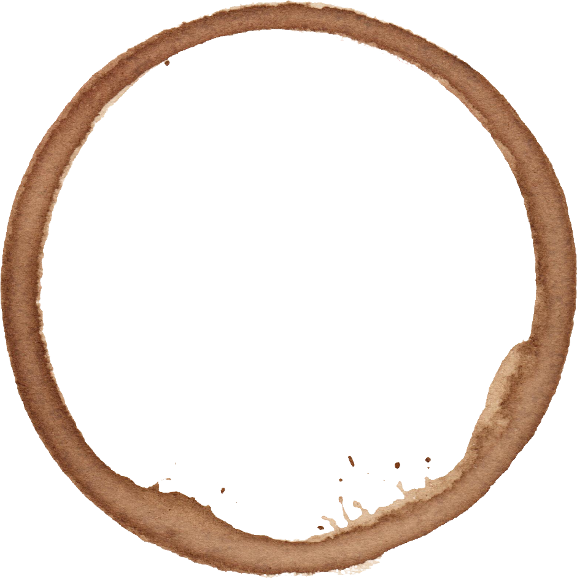
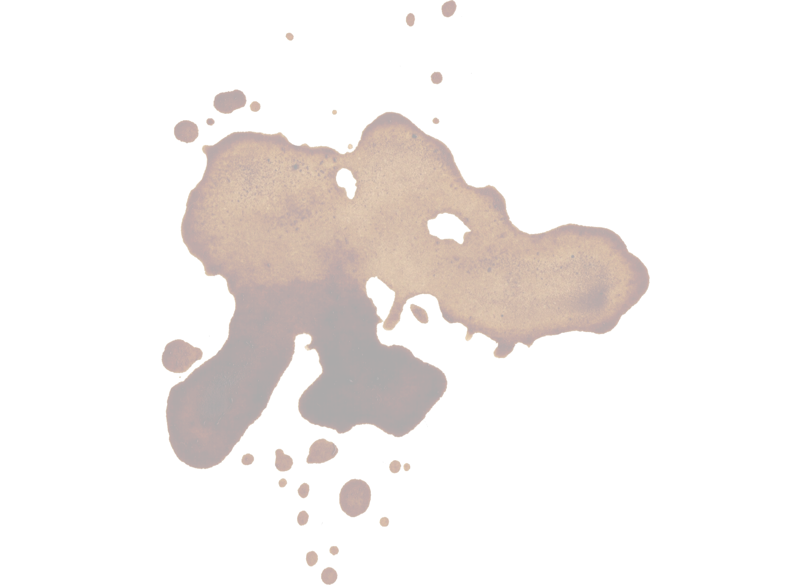
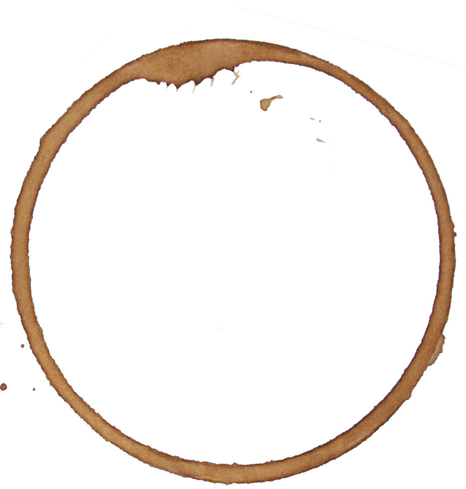
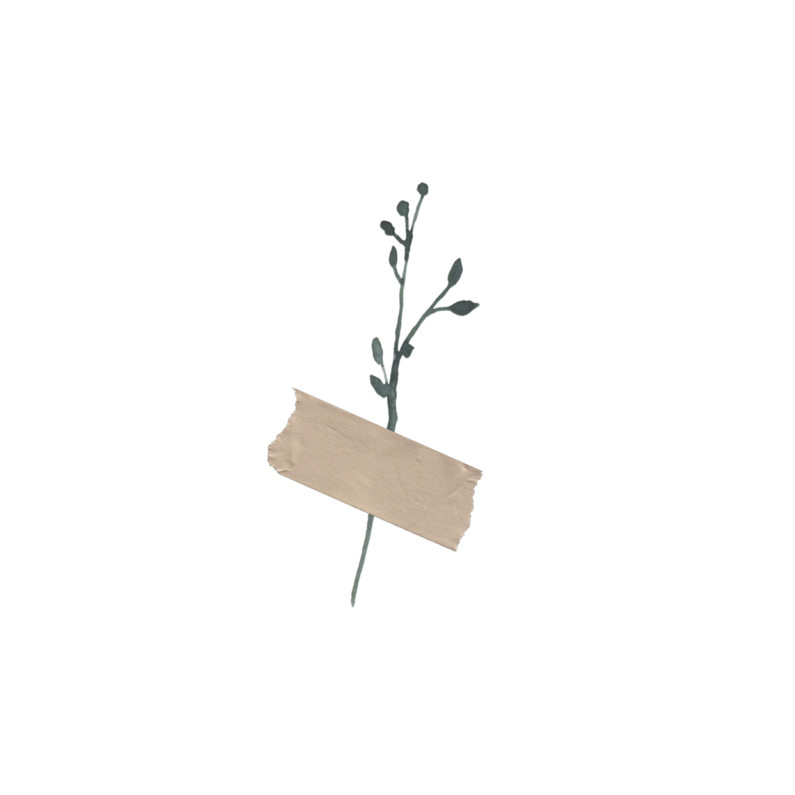
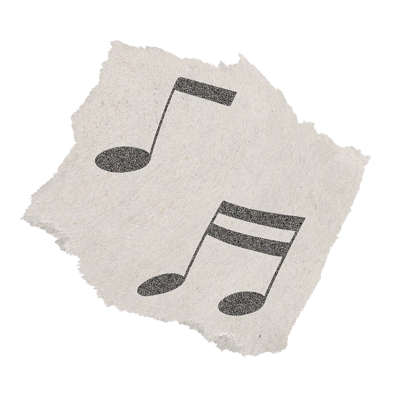

—
back
    
listening to music can free the soul
is it normal for so many souls to feel trapped?
where is the passion? where is the passion? where is the passion?
where is the passion? where is the passion? where is the passion?
where is the passion? where is the passion?
why must our music be as chaotic as the world around us?
does it help us process that chaos?
favorites:
john field “no. 14 in c major”
takashi kobuko “water”
chopin “24 preludes op. 28”
chypho “entomongaku”
donald byrd “wind parade”
joe hisaishi “merrry-go-round of life”
bach “11 bagatelles, op.119: 5. risoluto”
chet baker “farewell san fransisco”
why can't we slow down? must everything move so quickly?
I'll show you every move I know
Though they won't all shake it off
Even when I'm dancing in the dark sometimes
I can not move enough
But I'll be someone to understand
And show you places that I go
So that when we're dancing, the camera's spinning
The pain is the first thing that's to go
Oh, I'm afraid of losing me
I've been getting stripped bare for years
But I'm just hungry, I'm just dancer
I'm just sick of the food and the show
I am on the precipice of something
Underneath my skin, it's bubbling
A push off a cliff, a reason to kiss
Oh, I am something, I am something
But I'm not alone
I'm not alone with you
I'm not alone
I'm not alone with you
And when I push past this seminal cliff note (oh)
This focused permanence, this thunderstorm (oh)
I'll come out trying to dance (oh)
'Cause I'll be using the tools that I know
I've been chronically tired since high school
And chronically hungry since three in the morning
The phone light on my eyes is giving me a headache
And now it's morning
I get up
Well, I've been up
I've been walking 'round enough
To say that my mornings are no longer mornings
My midday is lost and the evening is when I wake up
I'll teach you every move I know
Though I don't know how to name them all
Even when I'm dancing when I'm alone, I feel invisible eyeballs
But I want someone to hold my hand
And show me all the moves they know
So that when we're dancing, the camera's spinning
Their eyes are the only ones I know
Oh, I've been in a losing streak
I've been eating badly for years
But I want dancing, I want hunger
I want everything you know
Oh, I've been wanting to feel free
But I've been touching stuff again and again
And if my disorders could chill
I'm sure I would know everything I don't
I've been chronically bad at small talk
And chronically low on serotonin
Did you hear they've been doing research?
The cause of depression may not be as simple as that
I wanna get up like I used to
And search my eyes enough
To work out the feelings inside of my bones that make me feel like they will just crack and break up